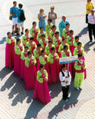
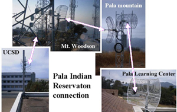
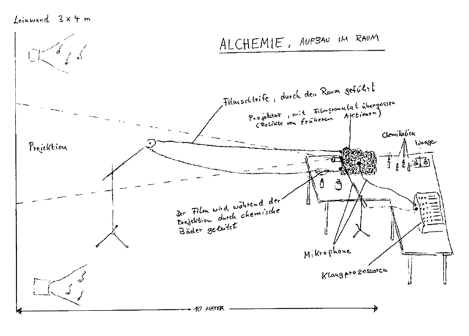

- data -
|  |
The goal of this project is to interest and support young women in Computer Science, 1995. .org), which focuses on realizing the concept of Virtual Data. Virtual Data encompasses the definition and delivery to a large community of a (potentially unlimited) virtual space of data products derived from experimental data. Major development was geared towards efficient and accurate simulation of message-passing programs (such as those using MPI) on high performance systems (such as the IBM SP). |
|  |
Approximately 50 countries have participated in this comparative survey of education focusing upon nine-year old students, thirteen-year old students, and students in their last year of secondary schools. , those students studying or having studied calculus; and science specialists, those students studying or having studied physics. All curriculum analysis data are currently available. Questionnaire and assessment data for thirteen-year-old students is also currently available. Questionnaire and assessment data for nine-year-olds will be available in late spring of 1997; questionnaire and assessment data for students in the last year of secondary school is anticipated to be available the beginning of 1998. |
|  |
NewZoid is intended to be a therapeutically subversive reaction to life in the bewilderness of our information society. It is the Internet's most ambitious automatic manipulation and transformation of unpredictable textual material. It has been admitted to the rhizome data base and chosen as a hot site by e-USA TODAY. (It's a totally non-profit venture, done for the good of humanity, by the way. . |
|
In the United States, a national probability sample was drawn that resulted in over 500 schools and approximately 33,000 students participating in the study. This sample design ensures the appropriate number of schools and students are participating to provide a representative sample of fourth-, eighth-, and twelfth-grade students in the United States as a whole. The TIMSS International Study Center at Boston College diligently worked to ensure that data collection procedures across countries were comparable. Utilizing two independent translations within each country, the TIMSS materials were translated into the national languages of the participating countries. Once these translations were reconciled, the TIMSS International Study Center verified these results through the use of a professional translation agency. |
A site I really like: http://www.isi.edu/~deelman/vitae_files/editdata.mso